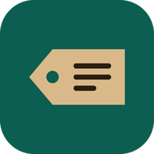

Store Inventory
Put the app on this phone. After that it works without internet, and everything stays on the phone.
It's on your home screen now. Look for the green Inventory icon.
Install it in 3 steps
- Tap the ⋮ at the top right of Chrome.
- Tap Add to home screen. Some phones say Install app.
- Tap Install.
Then find the green Inventory icon on your home screen and tap it.
Use Chrome. If this page opened inside another app, tap and pick Open in Chrome first.
Version: Test 001